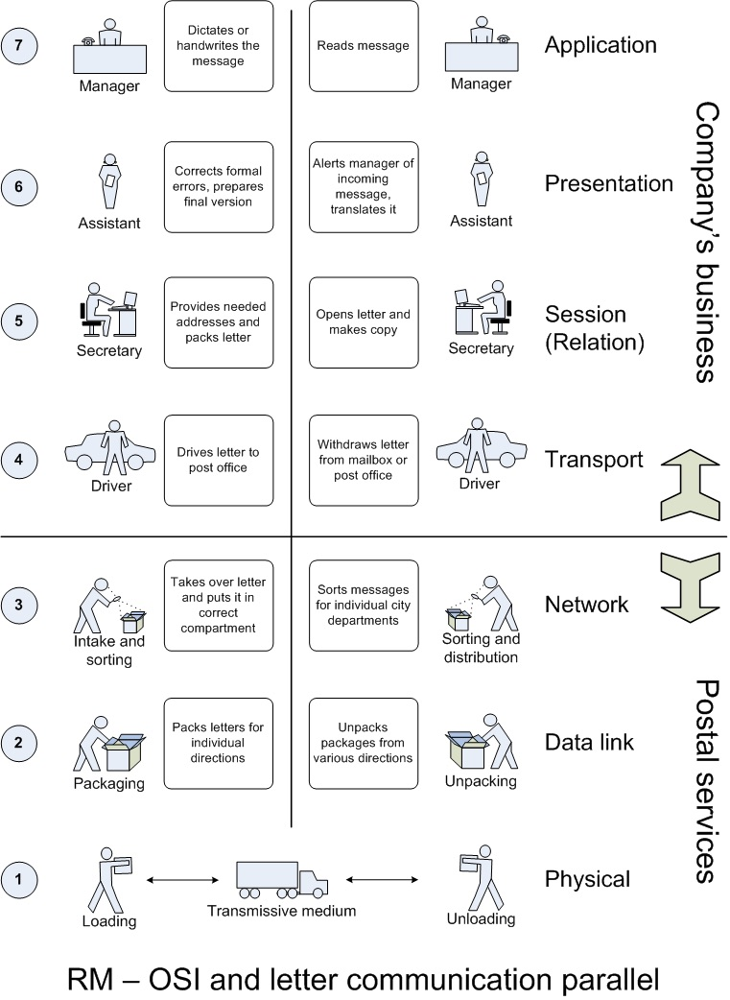

Introduction
Au Programme d'ISN :
| Savoirs | Capacités | Observations |
|---|---|---|
| Adressage sur un réseau Mécanisme d'adressage pour identifier une machine distante |
Décrire une situation d'adressage sur un type de réseau particulier |
On introduit ces notions en comparant différents types d'adressage existants : téléphone, courrier postal |
| Routage Mécanismes induits par la communication sur un réseau dont la structure est de type graphe Notion de paquets, de chemins, de routage |
Décrire le chemin suivi par l'information sur un exemple de routage |
On peut prendre l'exemple du routage des courriels. On explique la différence entre les réseaux de type arborescent et de type graphe |
| Structuration en couches des protocoles de réseau, notion de protocole Description des couches physiques, liaison, réseau, transport et applications |
Identifier des protocoles et les rattacher à une couche sur des exemples simples |
On peut, au choix, s'appuyer sur le modèle TCP/IP ou le modèle OSI. On introduit ces notions en présentant divers protocoles, par exemple: ethernet, Wi-Fi, IP,... |
Le Globe .......un océan câblé
Chaque fois que l'on visite une page Web ou envoie un courrier électronique, les données sont envoyées et reçues via un système de câbles complexe qui s'étend dans le monde entier.
Depuis les années 1850, l'homme a posé des câbles au-dessus des océans afin de mieux nous connecter.
Aujourd'hui, des centaines de milliers de kilomètres de câbles à fibres optiques transmettent constamment des données entre pays.
Comment deux machines distantes peuvent communiquer entre elles le fonctionnement du routage expliqué
Le modèle de communication OSI
Le transfert d'information au travers d'un réseau informatique répond à un modèle établis assez complexe de prime abord.
Avant de parcourir les documents resources fournis,voici un parallèle entre la communication information et l'envoi postal afin de mieux appréhender les concepts de base.

Depuis les années 1850, l'homme a posé des câbles au-dessus des océans afin de mieux nous connecter.
Aujourd'hui, des centaines de milliers de kilomètres de câbles à fibres optiques transmettent constamment des données entre pays.